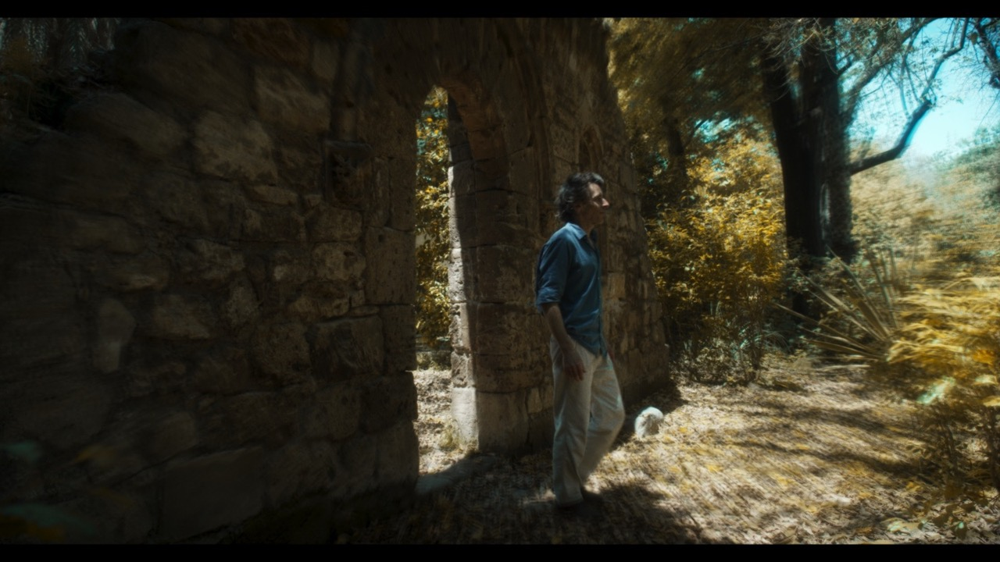
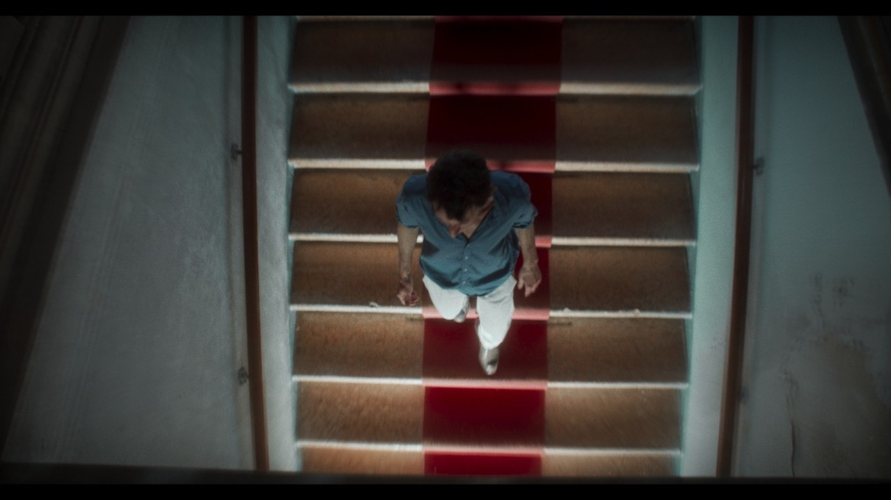
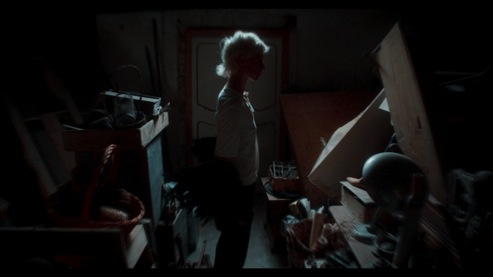
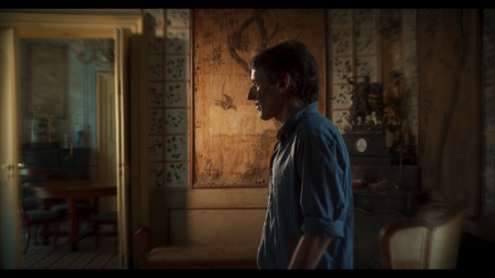
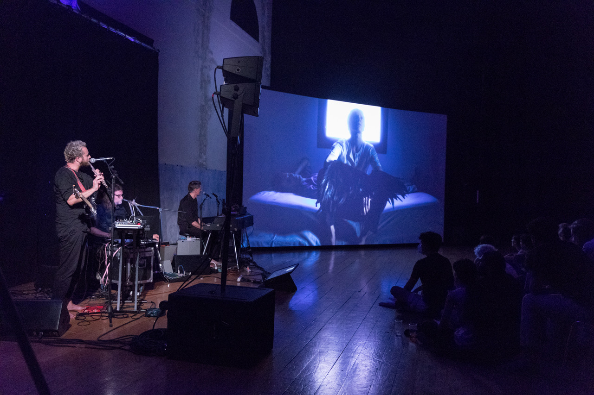

Moonbird

Descrizione
Moonbird è un’opera ibrida che fonde cinema, videoarte e opera lirica. Il libretto è composto dal cantautore Mauro Remiddi.
L’opera viene presentata e sviluppata in diversi contesti: come performance dal vivo con musica dal vivo e proiezioni video; come video a canale singolo.
Le immagini conducono il pubblico nella storia di Moonbird, una creatura onirica che appare e infonde vita in una villa in cui un uomo ha scelto di isolarsi dal mondo: un botanico che vive immerso nei suoi oggetti, nella vasta casa che lo intrappola e lo immobilizza.
Un evento banale fa crollare questo equilibrio e conduce il protagonista fuori dalla sua oscurità fatta di convenzioni e monotonia. Qui, in uno stato di sospensione onirica, nasce Moonbird.
Ciò che si è dimostrato incapace di penetrare la realtà lo fa attraverso il subconscio. L’uccello simboleggia il messaggio, qualunque esso sia, personale, unico e ineffabile, che non può penetrare il mondo dell’uomo.
I ruoli principali sono interpretati dall’attrice e performer Silvia Calderoni nel ruolo di Moonbird e dall’artista Manfredi Beninati nel ruolo di Amedeo.
Moonbird Variations
In Moonbird Variations le immagini del film sono inserite in una performance audiovisiva dal vivo che unisce cinema, videoarte e opera. È lì che si costruisce la storia di Moonbird.
Al centro del percorso sonoro, l’incontro con i personaggi avviene grazie a proiezioni video. La musica, che si trasforma da una forma neoclassica in una nuvola elettronica — in cui coesistono drum machine, voci manipolate e strumenti acustici — interagisce con le proiezioni.
Produzione
Moonbird è stato sostenuto e prodotto da MAMbo, Bologna; Fondazione Merz, Palermo/Torino; Triennale Milano; Snaporazverein, CH; e durante l’edizione 2021 di Prender-si cura, un progetto di residenze di ricerca e produzione artistica che si è svolto negli spazi di La Pelanda.
Immagini



